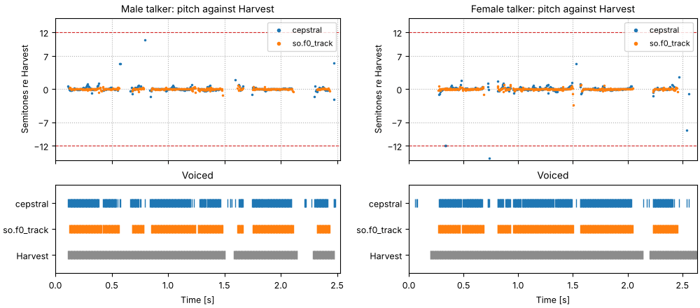

A voiced sound repeats once every glottal period, T_0, and its pitch track is F_0 = 1/T_0
measured every few milliseconds, with a decision in each time window about whether there is a
period to measure at all. This page measures the pitch of both talkers of Two
talkers three ways, compares the three tracks time window by time window, and
plays each one back as a buzz:
Pitch from the cepstrum: the peak of the cepstrum at one period, judged in each time window alone.
A tracker beside the cepstrum: so.f0_track, which finds the period in the waveform and chooses a path through its candidates, and WORLD's Harvest.
How high each talker's voice is, and how far it moves, is measured once on Two
talkers; the Spectral envelope page explains the
cepstrum that the first tracker reads.
Press play and a line follows the sound across every time axis in its plots. Click any time
axis to play from that point. Start with your volume low.
To run this page yourself, open it as a notebook in Colab or download it. It is the same code, and it fetches the recordings it needs from the sonore repository.
The sentence, and code the examples share
Three pitch tracks for each talker, all on the same grid of time windows every 5 ms from time 0:
the cepstral peak of a 40 ms Hann window, so.f0_track, and Harvest's track, stored with each
recording.
Setup, the same on every page
import os
import urllib.request
import matplotlib.pyplot as plt
import numpy as np
import sonore as so
plt.rcParams.update({"font.size": 9, "axes.titlesize": 10, "figure.dpi": 100})
def fetch(path):
"""A file from the sonore repository, by its path there: the local copy when this runs from
the repository root, otherwise downloaded from GitHub to the same relative path."""
if not os.path.exists(path):
os.makedirs(os.path.dirname(path) or ".", exist_ok=True)
urllib.request.urlretrieve("https://raw.githubusercontent.com/choyun1/sonore/main/" + path, path)
return path
def finish(snd):
"""How every sound in the gallery is played: 5 ms ramps, RMS 0.1, peak at most 0.95."""
snd = snd.ramp(5e-3).normalize(rms=0.1)
return snd.normalize(peak=0.95) if snd.peak > 0.95 else snd
Code
# The two talkers, by the CMU ARCTIC speaker names. Sources: docs/speech/SOURCES.md.
SPEAKERS = {"Male talker": "bdl", "Female talker": "slt"}
talkers = {
label: finish(so.load(fetch(f"docs/speech/{speaker}_arctic_a0131.flac")))
for label, speaker in SPEAKERS.items()
}
tracks = {label: so.f0_track(snd) for label, snd in talkers.items()}
# WORLD's Harvest track of each recording: times and F0, every 5 ms, 0 where unvoiced.
harvest = {
label: np.loadtxt(fetch(f"docs/speech/{speaker}_arctic_a0131_f0.csv"), delimiter=",", skiprows=2).T
for label, speaker in SPEAKERS.items()
}
# The cepstrum of 40 ms Hann windows every 5 ms, and the cepstral F0 of each: (times, F0, peak height).
cepstra = {label: so.Cepstrum(so.STFT(snd, win_dur=0.040, hop_dur=0.005)) for label, snd in talkers.items()}
cepstral = {label: cep.f0(f_lo=75, f_hi=400) for label, cep in cepstra.items()}
def three_tracks(label):
"""The three tracks of one talker at so.f0_track's time windows, 0 where unvoiced. All three
are on the same 5 ms grid from time 0, so this only picks out the shared time windows."""
track = tracks[label]
cepstral_t, cepstral_f0, _ = cepstral[label]
harvest_t, harvest_f0 = harvest[label]
return {
"cepstral": cepstral_f0[0][np.searchsorted(np.round(cepstral_t, 6), np.round(track.t, 6))],
"so.f0_track": np.where(track.voiced[0], track.f0[0], 0.0),
"Harvest": harvest_f0[np.searchsorted(np.round(harvest_t, 6), np.round(track.t, 6))],
}
pitch = {label: three_tracks(label) for label in talkers}
F0_TICKS = [60, 80, 100, 150, 200, 300, 400]
COLORS = {"cepstral": "tab:blue", "so.f0_track": "tab:orange", "Harvest": "0.55"}
medians = {label: np.median(tracks[label].f0[0][tracks[label].voiced[0]]) for label in talkers}
for label, f0 in medians.items():
print(f"{label}: median F0 {f0:.0f} Hz, period {1e3 / f0:.2f} ms, {0.040 * f0:.1f} periods in 40 ms")
Male talker: median F0 119 Hz, period 8.37 ms, 4.8 periods in 40 ms
Female talker: median F0 183 Hz, period 5.48 ms, 7.3 periods in 40 ms
Pitch from the cepstrum
The cepstrum of a time window (see One time window) has a
peak at one period, q = 1/F_0: the harmonics ripple the log spectrum once every F_0 hertz.
Taking the cepstrum of every time window gives a cepstrogram, time across and quefrency up, in
which a voiced stretch is a bright line at the period, falling as the pitch rises. Picking the
largest peak between 2.5 and 13.3 ms (400 and 75 Hz) in each time window is the classic
cepstral pitch estimate (Noll, 1967); a time window counts as voiced when the peak is taller
than 0.1.
The window must hold a few periods for the harmonics to show as a ripple: so.Cepstrum.f0
asks for three periods of its lowest F0, and 40 ms is three periods at 75 Hz. A higher voice
fits more periods into the same window (the cell above prints how many at each median), and its
line runs at a shorter quefrency. That brings a risk of its own. A cepstrum has smaller peaks
at whole multiples of the period as well, the rahmonics (Bogert et al., 1963), and the second
one, at two periods, falls inside the search range whenever F_0 is above 150 Hz. If it wins
over the first, the estimate is an octave low.
Code
for label, f0 in pitch.items():
voiced_f0 = f0["so.f0_track"][f0["so.f0_track"] > 0]
print(f"{label}: two periods inside 13.3 ms on {np.mean(voiced_f0 > 150):.0%} of voiced windows")
def octave_below(f0, reference):
"""True where both are voiced and f0 is half the reference, within 5%."""
both = (f0 > 0) & (reference > 0)
return both & (np.abs(f0 / np.where(both, reference, 1.0) - 0.5) < 0.025)
Male talker: two periods inside 13.3 ms on 0% of voiced windows
Female talker: two periods inside 13.3 ms on 100% of voiced windows
The cepstrogram and its pitch
Each talker's sentence. Top: the cepstrogram, with Harvest's period drawn over it. Bottom: the
cepstral F0 beside Harvest's, on a logarithmic frequency axis. Red circles mark time windows
where the cepstral F0 is an octave below Harvest's (within 5%). Each time window is judged on
its own, with no continuity from one to the next.
for label, f0 in pitch.items():
both = (f0["cepstral"] > 0) & (f0["Harvest"] > 0)
close = np.mean(np.abs(f0["cepstral"][both] / f0["Harvest"][both] - 1) < 0.05)
low = octave_below(f0["cepstral"], f0["Harvest"])
times = ", ".join(f"{s:.3f} s" for s in tracks[label].t[low]) or "no time window"
print(f"{label}: both voiced on {both.sum()} windows, cepstral F0 within 5% of Harvest on {close:.1%};")
print(f" an octave below Harvest on {low.sum()} ({low.sum() / both.sum():.1%}): {times}")
Male talker: both voiced on 318 windows, cepstral F0 within 5% of Harvest on 95.6%;
an octave below Harvest on 0 (0.0%): no time window
Female talker: both voiced on 344 windows, cepstral F0 within 5% of Harvest on 93.6%;
an octave below Harvest on 3 (0.9%): 0.330 s, 0.335 s, 0.340 s
Where both call a time window voiced, the cepstral F0 mostly lands on Harvest's. The female
talker's octave errors are the rahmonic winning; the male talker's second rahmonic lies
beyond the 13.3 ms the search reaches in every voiced time window, so it cannot be chosen.
A tracker beside the cepstrum
so.f0_track works the other way round. It looks for the period in the waveform rather than
the log spectrum, with YIN's difference function (de Cheveigné & Kawahara, 2002): up to eight
candidate periods per time window, each sharpened from the instantaneous frequencies of the
first six harmonics, as WORLD's StoneMask does (Morise et al., 2016). Each candidate is scored
by how well the waveform repeats one period later, and a single pass picks the cheapest path
through the candidates, so that the pitch rarely jumps and a time window is voiced only when
some candidate repeats well (a score above 0.5).
Anything that repeats every period also repeats every two, so the candidates include the
subharmonics, and one an octave below the period can score about as well as the period itself.
The tracker never chooses a candidate when another at a whole multiple of its frequency scores
about as well (subharmonic_margin). Harvest (Morise, 2017), WORLD's tracker, finds candidates
with a bank of filters instead, and leans toward calling a time window voiced.
Cepstral F0, a tracker, and Harvest
Each talker's sentence. Top: the tracker's candidates in gray, darker for a higher score, and
the path it chose. The dark row an octave below the path is the subharmonic. Bottom: the three
pitch tracks together. Where the tracker and Harvest both call a time window voiced they agree;
Harvest voices more time windows, mostly stretches where the tracker's best score is below 0.5.
sounds = talkers
fig = plt.figure(figsize=(10, 5.6), layout="constrained")
playhead = {}
for column, (label, snd) in zip(fig.subfigures(1, 2), sounds.items(), strict=True):
top, bottom = column.subplots(2, 1, sharex=True)
tracks[label].plot(top, candidates=True, color="tab:orange")
top.set(yscale="log", ylim=(50, 520), xlabel="", title=f"{label}: so.f0_track, candidates and path")
t = tracks[label].t
f0 = pitch[label]
for name in ("Harvest", "cepstral"):
on = f0[name] > 0
bottom.plot(t[on], f0[name][on], ".", ms=3, color=COLORS[name], label=name)
tracked = np.where(f0["so.f0_track"] > 0, f0["so.f0_track"], np.nan)
bottom.plot(t, tracked, color=COLORS["so.f0_track"], lw=1.5, label="so.f0_track")
bottom.set(yscale="log", ylim=(55, 420), xlabel="Time [s]", ylabel="F0 [Hz]", title="Pitch")
bottom.legend(loc="upper right", fontsize=8, markerscale=2)
bottom.grid(ls=":")
for ax in (top, bottom):
ax.set_yticks(F0_TICKS, [str(f) for f in F0_TICKS])
ax.minorticks_off()
ax.set_xlim(0, snd.duration)
playhead[label] = [top, bottom]
Code
for label, f0 in pitch.items():
track = tracks[label]
harvest_only = (f0["Harvest"] > 0) & (f0["so.f0_track"] == 0)
best_score = np.nanmax(np.nan_to_num(track.candidate_scores[0], nan=0.0), axis=1)
without_rule = so.f0_track(talkers[label], subharmonic_margin=None).f0[0]
with_rule = f0["so.f0_track"]
both = (without_rule > 0) & (with_rule > 0)
moved = np.sum(np.abs(without_rule[both] / with_rule[both] - 1) > 0.05)
voicing_changed = np.sum((without_rule > 0) != (with_rule > 0))
print(f"{label}: voiced on " + ", ".join(f"{np.mean(f > 0):.0%} ({name})" for name, f in f0.items()))
print(
f" Harvest voices {harvest_only.sum()} windows the tracker does not; best score below 0.5 on "
f"{np.mean(best_score[harvest_only] < 0.5):.0%} of them"
)
print(
f" without the subharmonic rule: {moved} windows move by over 5%, {voicing_changed} change voicing"
)
Male talker: voiced on 65% (cepstral), 68% (so.f0_track), 86% (Harvest)
Harvest voices 89 windows the tracker does not; best score below 0.5 on 70% of them
without the subharmonic rule: 0 windows move by over 5%, 3 change voicing
Female talker: voiced on 66% (cepstral), 68% (so.f0_track), 90% (Harvest)
Harvest voices 117 windows the tracker does not; best score below 0.5 on 82% of them
without the subharmonic rule: 0 windows move by over 5%, 0 change voicing
On this sentence the subharmonic rule moves no time window's pitch for either talker (it only
changes the voicing of the few time windows printed above): the path stays clear of the
subharmonic row by itself. The tracker is cautious about voicing, and Harvest generous: the
windows that Harvest alone voices are mostly ones where no candidate of the tracker's repeats
well, at the edges of voiced stretches and across the gaps between them. Neither recording has a
reference to say which is right. Against laryngograph recordings, where the vocal folds' own
contacts say when the voice is voiced (Bagshaw et al., 1993), Harvest calls many unvoiced time
windows voiced, which is why the tracker is stricter by default
(docs/design/views/f0.md).
Octave and voicing errors
A pitch track goes wrong in two ways. A gross error puts the F0 far from the true one; an
octave error is the kind this page has met, the track at half or twice the true F0, a
subharmonic or a second harmonic taken for the fundamental. A voicing error calls a time window voiced
where the voice is not, or unvoiced where it is. Without a reference neither can be scored here,
but the three tracks can be scored against each other. For each pair, the cell counts the time
windows where both are voiced and one is within 5% of half the other, and the time windows
where only one of the two is voiced.
Code
PAIRS = [("cepstral", "Harvest"), ("so.f0_track", "Harvest"), ("cepstral", "so.f0_track")]
print(f"{'':24}{'both voiced':>12}{'within 5%':>10}{'octave low':>11}{'octave high':>12}{'one voiced':>11}")
for label, f0 in pitch.items():
for first, second in PAIRS:
a, b = f0[first], f0[second]
both = (a > 0) & (b > 0)
within = np.mean(np.abs(a[both] / b[both] - 1) < 0.05)
low, high = octave_below(a, b).sum(), octave_below(b, a).sum()
one = np.sum((a > 0) != (b > 0))
print(
f"{label.split()[0]:7}{first + ' / ' + second:24}{both.sum():5}"
f"{within:10.1%}{low:11}{high:12}{one:11}"
)
both voiced within 5% octave low octave high one voiced
Male cepstral / Harvest 318 95.6% 0 0 125
Male so.f0_track / Harvest 343 99.7% 0 0 89
Male cepstral / so.f0_track 300 98.0% 0 0 72
Female cepstral / Harvest 344 93.6% 3 0 139
Female so.f0_track / Harvest 360 98.3% 0 0 117
Female cepstral / so.f0_track 333 95.8% 3 0 44
Three tracks against each other
Each pair of tracks, time window by time window. Top: the cepstral F0 and so.f0_track, in
semitones above or below Harvest, where all three are voiced; an octave is 12 semitones. Bottom:
where each track calls the time window voiced.

Code
fig = plt.figure(figsize=(10, 4.4), layout="constrained")
for column, label in zip(fig.subfigures(1, 2), talkers, strict=True):
top, bottom = column.subplots(2, 1, sharex=True, height_ratios=[1.6, 1])
t = tracks[label].t
f0 = pitch[label]
for name in ("cepstral", "so.f0_track"):
on = (f0[name] > 0) & (f0["Harvest"] > 0)
top.plot(
t[on], 12 * np.log2(f0[name][on] / f0["Harvest"][on]), ".", ms=3, color=COLORS[name], label=name
)
top.set(ylim=(-15, 15), ylabel="Semitones re Harvest", title=f"{label}: pitch against Harvest")
top.set_yticks([-12, -7, 0, 7, 12])
top.axhline(-12, color="tab:red", ls="--", lw=0.8)
top.axhline(12, color="tab:red", ls="--", lw=0.8)
top.legend(loc="upper right", fontsize=8, markerscale=2)
top.grid(ls=":")
for row, name in enumerate(("Harvest", "so.f0_track", "cepstral")):
on = f0[name] > 0
bottom.plot(t[on], np.full(on.sum(), row), "|", ms=8, color=COLORS[name])
bottom.set(ylim=(-0.7, 2.7), xlim=(0, talkers[label].duration), xlabel="Time [s]", title="Voiced")
bottom.set_yticks([0, 1, 2], ["Harvest", "so.f0_track", "cepstral"])
Where all three are voiced, so.f0_track sits on Harvest; the cepstral F0 scatters more (the
table counts how often each is within 5%) and, for the female talker only, drops by an
octave. Most of the disagreement between the tracks is about voicing: Harvest runs on through
stretches the other two leave unvoiced, and the cepstral F0 flickers on and off at the edges
of voiced stretches, where its peak hovers around the threshold.
Three pitch tracks, heard
The quickest way to hear a pitch track is to play it. A band-limited sawtooth that follows each
track, silent where the track says unvoiced, keeps the intonation and nothing else. Errors that
are small on a plot are easy to hear: an octave slip is a sudden drop, and a time window wrongly
called voiced or unvoiced is a click or a hole. To hear the voice rebuilt from a pitch track and
a spectral envelope, see Rebuilding and changing a voice.
Code
def show_pair(sounds, title, contours=None, fmax=4000):
"""One column per talker: the waveform, and a narrowband spectrogram (Hann 33 ms) with a pitch
track over it if one is given. Returns the figure and, for each talker, the panels the
playhead follows."""
fig = plt.figure(figsize=(10, 4.4), layout="constrained")
playhead = {}
for column, (label, snd) in zip(fig.subfigures(1, 2), sounds.items(), strict=True):
top, bottom = column.subplots(2, 1, sharex=True, height_ratios=[0.4, 1])
snd.plot(top, color="k", lw=0.4)
top.set(title=f"{label}: {title}", xlabel="", ylabel="")
so.STFT(snd, win_dur=0.0333, hop_dur=0.002).plot(bottom, db_range=60, colorbar=False, fmax=fmax)
bottom.set_title("Spectrogram (Hann 33 ms)")
if contours is not None:
t, f0 = contours[label]
bottom.plot(t, np.where(f0 > 0, f0, np.nan), color="c", lw=1.2)
for ax in (top, bottom):
ax.set_xlim(0, snd.duration)
playhead[label] = [top, bottom]
return fig, playhead
def sawtooths(name):
"""A sawtooth on one of the three tracks, for each talker, and the track itself."""
contours = {label: (tracks[label].t, pitch[label][name]) for label in talkers}
buzz = {
label: finish(so.sawtooth_wave(snd.duration, snd.fs, contours[label]))
for label, snd in talkers.items()
}
return buzz, contours
The sentence
Each talker's sentence, for reference.
Male talker
hp0_the_sentence_male_talker.flac, 2.5 s, mono
Female talker
hp0_the_sentence_female_talker.flac, 2.6 s, mono
Code
sounds = talkers
fig, playhead = show_pair(sounds, "the sentence")
A sawtooth on the cepstral F0
A sawtooth on the cepstral F0. Each time window is judged on its own, so the buzz flickers on
and off where the cepstral peak hovers around its threshold, and, in the female talker's
sentence, drops an octave for a moment at the time windows printed under The cepstrogram and
its pitch.
A sawtooth on Harvest's track. Harvest voices more of each sentence, so the buzz runs on
through some of the consonants that so.f0_track leaves silent.
Tracking from the cepstrum. Cepstral F0 judges each time window alone. so.f0_track chooses a path through candidates from the waveform; the same could be done with cepstral peaks as the candidates, which would remove most of the octave slips above.
A reference. The tracks are compared with each other, not with the vocal folds. The checks against laryngograph recordings are in docs/design/views/f0.md.
Bagshaw, Hiller & Jack (1993). Enhanced pitch tracking and the processing of F0 contours for computer aided intonation teaching. Proc. Eurospeech 1993. CSTR, FDA database. The laryngograph reference in tools/check_f0_fda.py.
Bogert, Healy & Tukey (1963). The quefrency alanysis of time series for echoes: cepstrum, pseudo-autocovariance, cross-cepstrum and saphe cracking. In M. Rosenblatt (Ed.), Time Series Analysis. Wiley. Semantic Scholar.
de Cheveigné & Kawahara (2002). YIN, a fundamental frequency estimator for speech and music. J. Acoust. Soc. Am. 111(4), 1917–1930. doi:10.1121/1.1458024. f0.f0_track
Kominek & Black (2004). The CMU Arctic speech databases. Proc. 5th ISCA Speech Synthesis Workshop, 223–224. ISCA Archive. The sentence, by speakers bdl and slt.
Morise (2017). Harvest: a high-performance fundamental frequency estimator from speech signals. Proc. Interspeech 2017, 2321–2325. doi:10.21437/Interspeech.2017-68. The stored F0 tracks.
Morise, Yokomori & Ozawa (2016). WORLD: a vocoder-based high-quality speech synthesis system for real-time applications. IEICE Trans. Inf. & Syst. E99-D(7), 1877–1884. doi:10.1587/transinf.2015EDP7457. StoneMask.